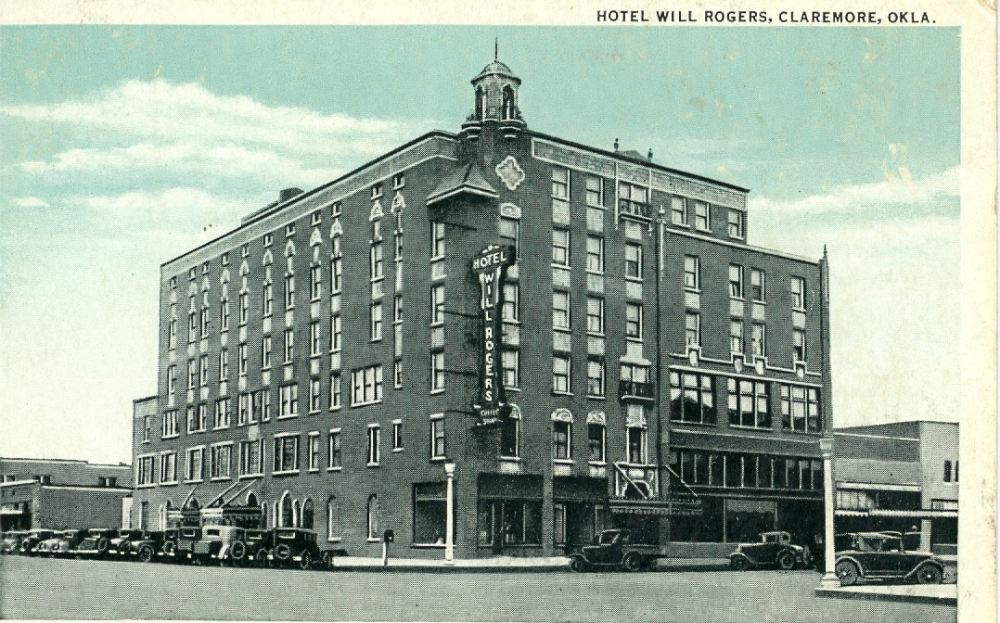

1929–1930 • Historic Landmark • Stop 1 of 6
"Imagine arriving in Claremore during the height of the mineral bath era. The scent of sulfur filled the air, travelers bustled through downtown, and the Hotel Will Rogers stood ready to welcome guests from near and far. Today, you're standing where generations of visitors once began their Claremore experience."

Slide to compare today with the historic view.
1929–1930
Art Deco
Hotel Will Rogers
Will Rogers Lofts
Gibby's Restaurant
French Quarter Coffee Co.
Mineral baths that attracted visitors from across the country.
The Hotel Will Rogers has stood at the heart of downtown Claremore since it was built between 1929 and 1930. Today, the beautifully restored building is home to the Will Rogers Lofts, Gibby's Restaurant, and French Quarter Coffee Co., while preserving an important piece of the city's history.
During Claremore's mineral bath boom, visitors traveled from across the region to experience the city's famous healing waters and warm hospitality. The distinctive scent of the sulfur baths often drifted through the streets, greeting guests as they arrived. Although commonly called "radium baths," the water did not actually contain radium. Instead, the water was rich in 13 naturally occurring minerals, including sulfur, salt, and iron.
After closing in 1991, the hotel fell into disrepair and faced the possibility of demolition. In 1997, the building was purchased and restored through a $2.5 million renovation that transformed the upper floors into 38 one- and two-bedroom loft apartments. As part of the restoration, three of the original mineral baths on the sixth floor were preserved, allowing visitors today to glimpse one of the most distinctive features of the historic Hotel Will Rogers.
Continue down Will Rogers Boulevard toward the next stop.